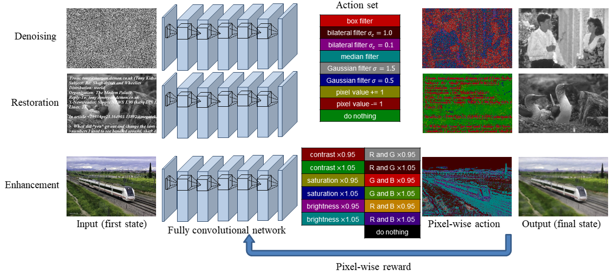
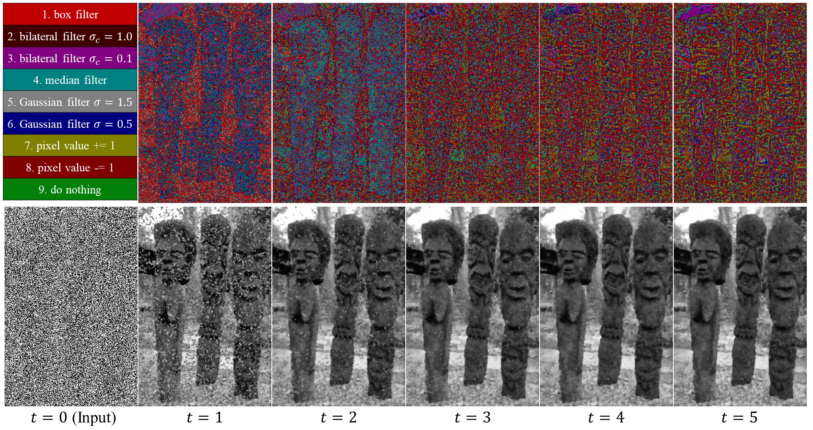
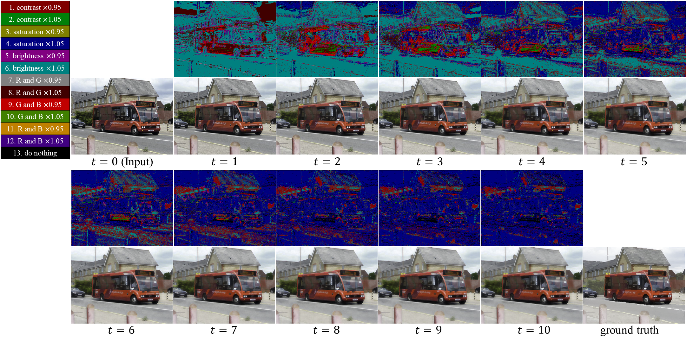

The proposed pixelRL is applied to three applications: image denoising, image restoration, and local color enhancement.

Denoising process of the proposed method and the action map at each time step for salt and pepper denoising (density=0.9).

Color enhancement process of the proposed method for watercolor, and the action map at each time step.
Application to blind image restoration.
This paper tackles a new problem setting: reinforcement learning with pixel-wise rewards (pixelRL) for image processing. After the introduction of the deep Q-network, deep RL has been achieving great success. However, the applications of deep RL for image processing are still limited. Therefore, we extend deep RL to pixelRL for various image processing applications. In pixelRL, each pixel has an agent, and the agent changes the pixel value by taking an action. We also propose an effective learning method for pixelRL that significantly improves the performance by considering not only the future states of the own pixel but also those of the neighbor pixels. The proposed method can be applied to some image processing tasks that require pixel-wise manipulations, where deep RL has never been applied. We apply the proposed method to three image processing tasks: image denoising, image restoration, and local color enhancement. Our experimental results demonstrate that the proposed method achieves comparable or better performance, compared with the state-of-the-art methods based on supervised learning.
@inproceedings{aaai_furuta_2019,
author={Ryosuke Furuta and Naoto Inoue and Toshihiko Yamasaki},
title={Fully Convolutional Network with Multi-Step Reinforcement Learning for Image Processing},
booktitle={AAAI Conference on Artificial Intelligence (AAAI)},
year={2019}
}
@article{furuta2020pixelrl,
author={Ryosuke Furuta and Naoto Inoue and Toshihiko Yamasaki},
title={PixelRL: Fully Convolutional Network with Reinforcement Learning for Image Processing},
journal={IEEE Transactions on Multimedia (TMM)},
year={2020},
volume={22},
number={7},
pages={1704-1719}
}